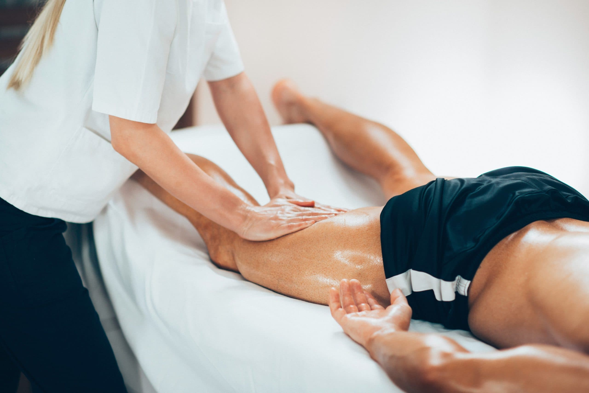

Agende Uma SessãoA massagem desportiva é uma técnica manual adaptada às necessidades de pessoas fisicamente ativas. As manobras e a pressão são escolhidas conforme o momento da rotina de atividade física, as preferências e o conforto de cada pessoa. Não substitui avaliação de lesões ou dor persistente.
O atendimento começa com uma conversa sobre a atividade física praticada e as áreas de interesse. O profissional aplica manobras manuais adequadas à região e ajusta a pressão conforme a resposta da pessoa. A massagem pode ser realizada antes ou depois da atividade, de acordo com o objetivo combinado e a avaliação individual.